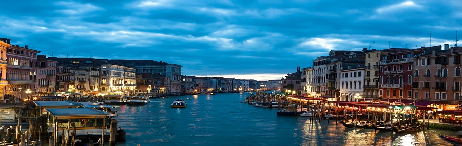

Destinos mais procurados
Tokyo-JPNÓtimo destino para quem busca conhecer o país do sol nascente, com diária de 5 dias inclusa em um dos melhores hóteis da cidade, com direito a café da manhã e passeio turístico. Veneza-ITA
Ótimo destino para quem busca conhecer um novo local favorito, com diária de 5 dias inclusa em um dos melhores hóteis da cidade, com direito a café da manhã e passeio turístico.Roma-ITA
Ótimo destino para quem busca conhecer o país do sol nascente, com diária de 5 dias inclusa em um dos melhores hóteis da cidade, com direito a café da manhã e passeio turístico.Sidney-AUS
Ótimo destino para quem busca conhecer o país do sol nascente, com diária de 5 dias inclusa em um dos melhores hóteis da cidade, com direito a café da manhã e passeio turístico.
Se deseja conhecer outros locais, escolher a melhor opcão de quarto assim como preços, clique aqui.